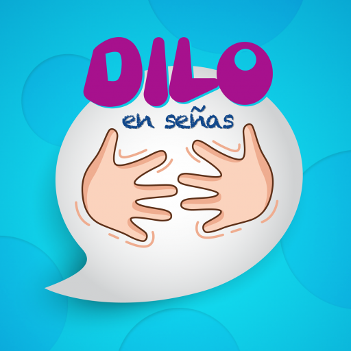
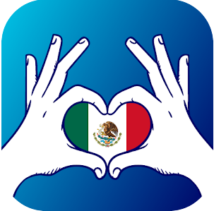
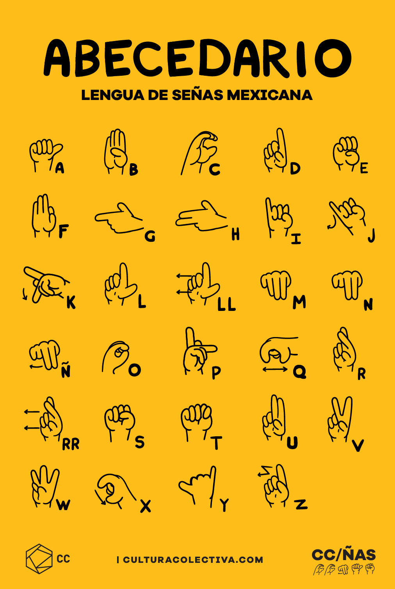
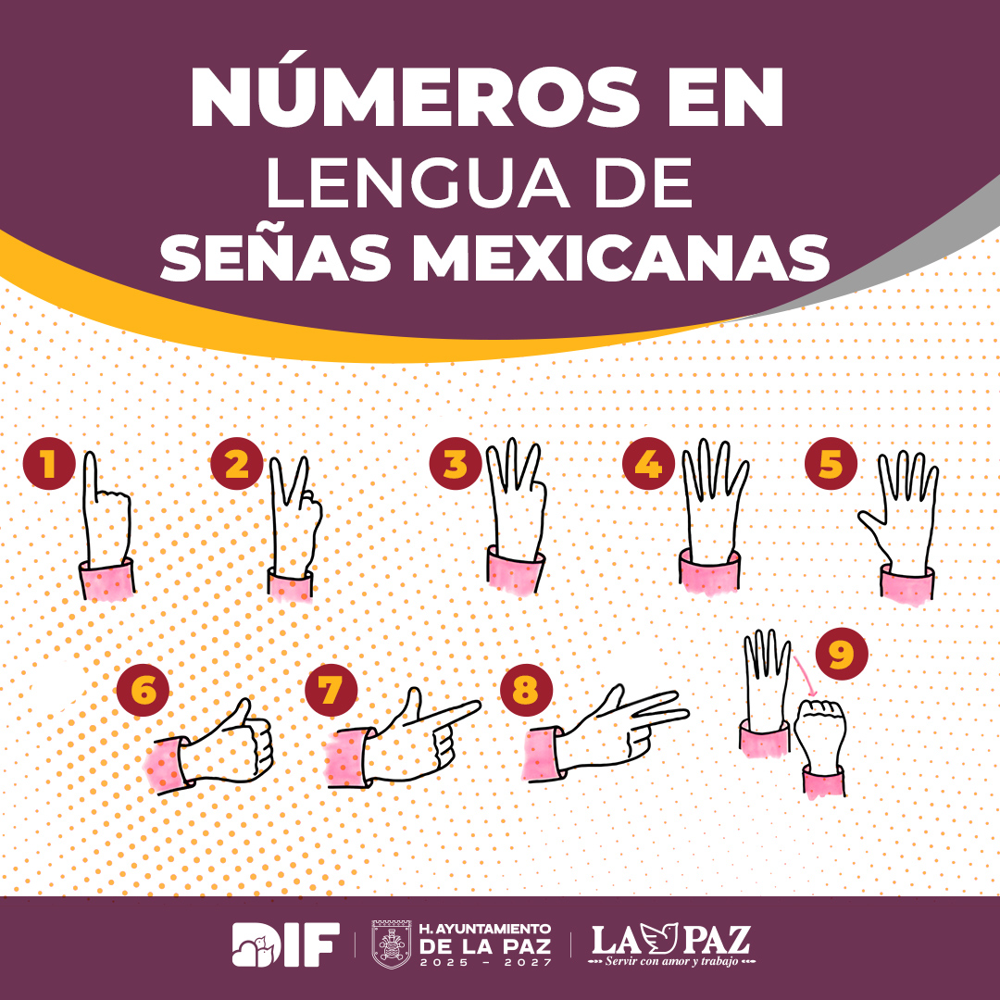
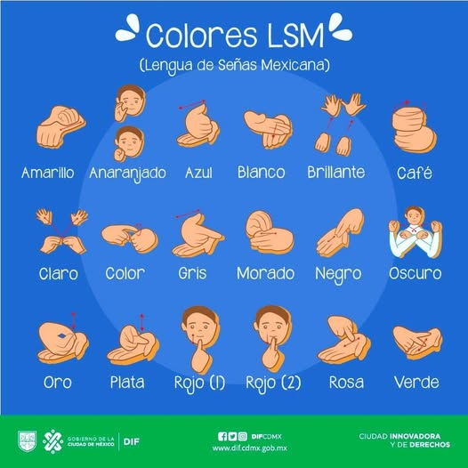
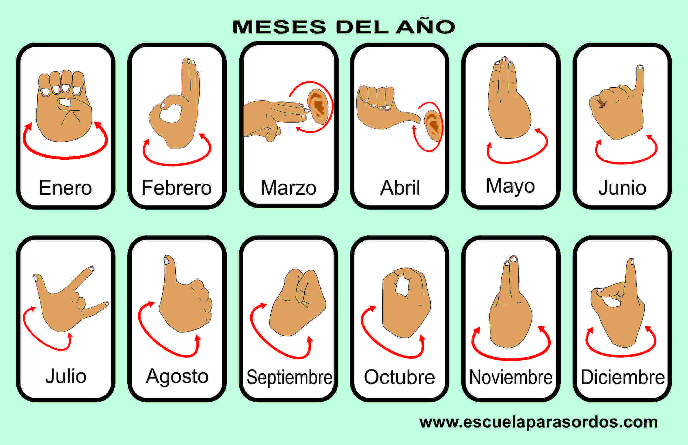

¿Sabías que no todo se dice con palabras?
Existe una forma de comunicarse que es visual, directa y muy expresiva. Se usa todos
los días por miles de personas en México, y entenderla puede cambiar la forma en que
te relacionas con los demás.
Que nuestras manos hablen cuando las voces no alcanzan.🤟
La lengua de señas mexicana (con siglas LSM), es una lengua natural usada por muchas personas sordas en México. Se comunica a través de gestos, movimientos de manos, expresiones faciales y corporales. No es una traducción del español, sino una lengua independiente con su propia estructura gramatical y léxica.
Se basa en la combinación de diferentes formas de manos, posiciones, movimientos y expresiones faciales. Es el principal medio de comunicación de la comunidad sorda mexicana, tanto para comunicarse entre ellos como para comunicarse con oyentes.
Para la gran mayoría de quienes han nacido sordos o han quedado sordos desde la infancia o la juventud, ésta es la lengua en que articulan sus pensamientos y sus emociones, la que les permite satisfacer sus necesidades comunicativas así como desarrollar sus capacidades cognitivas al máximo mientras interactúan con el mundo que les rodea.
📌 Dato interesante: La LSM fue oficialmente reconocida por el gobierno mexicano en el año 2005.
¿Cómo aprender lengua de señas?
Para aprender lengua de señas contamos con diversos recursos tanto en línea como presencial, como cursos online, cursos impatidos por instituciones u organizaciones, apps móviles, tutoriales en redes sociales, entre otras cosas. Del mismo modo, en los últimos años ha tratado de reforzarse la inlcusión, y en redes sociales populares como tiktok e instagram fácilmente podemos encontrarnos con videosclips enseñando el abecedario, saludos, colores, canciones infantiles, ¡E incluso perfiles dedicados únicamente a la LSM!.
A continuación te presento algunas aplicaciones que puedes utilizar para comenzar a aprender:
Aplicaciones para aprender LSM
Logo
Nombre
Función
Descargar
Intersign - Aprende LSM
Intersign es una aplicación gratuita disponible en Apple App Store y Google Play que permite aprender Lengua de Señas Mexicana (LSM). La app incluye lecciones, niveles de dificultad progresivos, actividades y juegos, además de un diccionario y glosario de señas. Está diseñada para ayudar a cualquier persona, especialmente familiares y amigos de personas sordas, a aprender LSM.

Dilo en señas - El origen
Es una aplicación móvil, un juego didáctico para aprender la Lengua de Señas Mexicana (LSM). Está diseñada especialmente para niños sordos pequeños, pero es útil para cualquier persona que quiera aprender o practicar la LSM. La app ofrece 89 señas en 7 categorías: Familia, Alimentos, Juguetes, Animales, Colores, Números y Abecedario.

Señas y sonrisas - México
Es una herramienta valiosa para familias con niños sordos o con dificultades auditivas. Enseña la Lengua de Señas Mexicana (LSM) a padres y cuidadores, para que puedan comunicar y relacionarse con sus hijos de manera efectiva desde edades tempranas, antes de que ingresen al sistema escolar. La aplicación también proporciona información sobre recursos locales para apoyar el desarrollo lingüístico de los niños.
Sin embargo, para aprender lengua de señas es importante tener en cuenta la grámatica y léxica propia de la LSM, para ello, también podría sevir ver algunos video tutoriales y/o buscar recursos presenciales en tu comunidad.
📌 Dato interesante: El 10 de junio es el Día Nacional de la Lengua de Señas Mexicana. La inclusión se habla en todos los idiomas... ¡también con las manos!
¿Y el español signado/señado? Diferencias con la LSM
El español signado no es una lengua de señas natural, sino una representación manual de la lengua española, donde se utilizan las señas de la Lengua de Señas Mexicana (LSM) siguiendo la gramática del español; es ahí donde se encuentra la primera y mayor diferencia de este con la LSM, ésta última tiene una grámatica y uso de conseptos propia, por lo que no es lo mismo hablar y acompoñar la voz con la seña de lo que se está diciendo, que hablar en lengua de señas.
Es importante tener en cuenta que la LSM es una lengua completa y rica, con su propia estructura gramatical y cultural. El español signado, si bien puede ser útil en algunos contextos, no reemplaza a la LSM y no debe ser utilizado como una herramienta para negar la existencia o el uso de la lengua de señas.
📌 Dato interesante: La expresión facial y los movimientos corporales son importantes para la gramática de la LSM, ya que pueden añadir matices semánticos y gramaticales.
Algunas señas básicas son...
En la LSM existen desde señas muy sencillas para saludos o colores, hasta tener que deletrear palabras largas que no tienen seña propia; del mismo modo, para presentarte y decir tu nombre debes hacer la seña de cada letra de tu nombre, es decir, "deletrearlo", y solo una persona con discapacidad auditiva puede darte una seña propia, que puede estar relacionada con tu nombre, inicial, o incluso características físicas o rasgos de tu personalidad.
 
 
¡Aprende LSM!
Aprender lengua se señas mexicana no es solo para instructores certificados ni personas sordas, nosotros como oyentes tenemos también todas las posibilidades de aprenderla, como una forma de inclusión, faciliotando la interacción social, y desarrollando habilidades de procesamiento visual y espacial.
Para finalizar te presento algunos tutoriales de canciones, comúnmente estas se representan con español signado, pero aún así podría ser de ayuda si estás iniciando. ¡Haz el intento y sigue uno de ellos!.